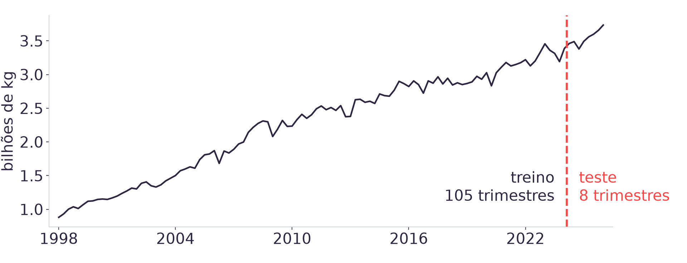

08h00 · 10h00
Autoestudo na Adalove: separação treino e teste, avaliação de modelos de regressão, overfitting e reprodutibilidade [5].
10h00 · 10h15
Daily. Cada dupla confirma que a base de frango com defasagem e sazonalidade da Aula 04 está pronta para treinar.
10h15 · 12h00
Treinar, separar, avaliar, e o que a métrica de uma janela não mostra. Fecha a Sprint 2, com review em 28/08.
O Modelo 1 do TAPI começa a existir hoje. Ao final da aula cada dupla tem uma previsão de oito trimestres, com erro medido em dados que o modelo não viu, e uma resposta para a pergunta que o parceiro faz primeiro: isso é melhor do que o que já fazemos hoje?
analitica.shape
# (113, 15)
analitica["periodo"].iloc[0] # '1998-T1'
analitica["periodo"].iloc[-1] # '2026-T1'
# colunas que o modelo de hoje usa
# frangos_lag1 frangos_lag4 sen cosA Aula 04 uniu as cinco séries do SIDRA [1] pela chave periodo, construiu
as defasagens de 1 e de 4 trimestres, codificou a sazonalidade em
sen e cos e padronizou as colunas numéricas.
Sobraram 113 linhas: 117 do inner menos as 4 que
shift(4) consome no topo da série.
Ela também deixou três dívidas, e hoje é o dia de pagar as três.
| O que ficou em aberto | O que a Aula 04 disse | Onde fecha hoje |
|---|---|---|
| Normalidade em regressão | A suposição recai sobre os resíduos, e eles só existem depois de um modelo ajustado | Bloco 4, com Shapiro-Wilk nos resíduos |
| O leite entra no modelo? | Fica fora, e volta apenas se reduzir o erro em dados que o modelo não viu | Bloco 3, medindo o MAPE com e sem ele |
| Padronizar muda o resultado? | Regressão sem regularização produz as mesmas previsões com ou sem padronização | Bloco 4, e a resposta tem uma ressalva |
A terceira é a mais interessante das três, porque a afirmação da Aula 04 está correta em álgebra exata e falha em aritmética de ponto flutuante nesta base específica.
Por que não podemos embaralhar os 113 trimestres antes de separar treino e teste?
A resposta que a turma costuma dar: porque a ordem importa em série temporal.
Está certa, e é rasa. A pergunta seguinte é a que interessa: importa para quê?
O que a LDC precisa saber: quanto o modelo erra ao prever um trimestre que ainda não aconteceu.
Um teste embaralhado responde outra coisa: quanto o modelo erra ao preencher um buraco no meio de um histórico que ele já conhece dos dois lados.
As duas perguntas têm resposta numérica, as duas saem do mesmo código, e só uma delas corresponde ao que o parceiro vai fazer com o modelo. O Bloco 2 mede as duas.
from sklearn.linear_model import LinearRegression
FEATURES = ["frangos_lag1", "frangos_lag4",
"sen", "cos"]
X = analitica[FEATURES]
y = analitica["abate_frangos"]
modelo = LinearRegression()
modelo.fit(X, y)
modelo.predict(X[:3])Todo estimador do scikit-learn [4] tem a mesma interface, e ela vale para os modelos das Aulas 06 a 11 sem mudar nome de método:
fit(X, y) aprende os parâmetros a partir dos dados.
predict(X) aplica o que foi aprendido.
X é sempre bidimensional (uma linha por observação, uma coluna por
característica) e y é unidimensional. Passar uma
Series como X levanta erro de forma, e é o primeiro
tropeço de quase toda dupla.
- Ajustem
LinearRegressionsobre as 113 linhas, com as quatro colunas acima, e anotemmodelo.score(X, y). - Imprimam
modelo.coef_emodelo.intercept_. Qual das quatro colunas recebeu o maior coeficiente? - Somem os coeficientes de
frangos_lag1efrangos_lag4. O resultado fica perto de qual número redondo? - Antes da correção: o
scoreque vocês acabaram de ler foi calculado sobre quais linhas? Isso é uma boa notícia?
# ajuste sobre as 113 linhas
frangos_lag1 +0,6819
frangos_lag4 +0,3147
--------
soma 0,9966
modelo.score(X, y) # R2 no TREINO
# 0,9907O modelo aprendeu a prever cada trimestre como uma média ponderada do trimestre anterior e do mesmo trimestre do ano anterior, com pesos de 68% e 31%.
Ninguém escreveu essa regra: ela saiu dos mínimos quadrados sobre 105 trimestres de abate real.
E o score foi calculado sobre as mesmas linhas usadas no
treino. Um número alto ali significa apenas que o modelo consegue reproduzir
o que já viu, que é a pergunta mais fácil que se pode fazer a ele.
N_TESTE = 8
corte = len(analitica) - N_TESTE
treino = analitica.iloc[:corte] # 105
teste = analitica.iloc[corte:] # 8
# 1998-T1 a 2024-T1 -> treino
# 2024-T2 a 2026-T1 -> testeDuas fatias contíguas no tempo, com iloc [2], sobre a base já
ordenada por periodo. Nenhuma função de sorteio aparece.
Oito trimestres são dois anos, que é o horizonte que o TAPI pede [7]. O teste imita a situação real: o modelo conhece tudo até 2024-T1 e precisa dizer o que acontece depois.
train_test_split com shuffle=True, que é o padrão da
função, colocaria 2026-T1 no treino e 2019-T3 no teste.

Os oito trimestres à direita da linha são os mais recentes da série, e também os de maior volume: o modelo precisa acertar num patamar de produção que nunca viu no treino. Um teste sorteado espalharia esses oito pontos por 29 anos, e mediria uma tarefa diferente e mais fácil.
# o erro que ninguem avisa
base["frangos_futuro"] = base[ALVO].shift(-1)
# honesto MAPE 1,69%
# com frangos_futuro MAPE 1,13%
# nenhum aviso, nenhum erro,
# metrica 33% melhorshift(-1) traz o valor do trimestre seguinte para a linha de hoje. O
modelo recebe parte da resposta como entrada, e o erro cai um terço.
O código roda, a métrica sobe e nenhuma mensagem de erro aparece. Em produção o modelo falha, porque o próximo trimestre ainda não aconteceu.
Vazamento se detecta lendo o desenho do experimento. A métrica não serve de alarme, porque a de um modelo vazado é justamente a que parece boa.
- Separem treino e teste por
iloc, com os últimos 8 trimestres reservados, e confiram os períodos das duas pontas. - Reajustem o modelo só sobre o treino e prevejam os 8 trimestres do teste.
- Refaçam a separação com
train_test_split(X, y, test_size=8, random_state=42)e olhem quais períodos caíram no teste. - Antes da correção: com o sorteio, algum trimestre de 2025 foi parar no treino? O que o modelo passou a saber que não deveria?
| Métrica | Unidade | A pergunta que responde | O limite dela |
|---|---|---|---|
| RMSE | quilogramas | De quanto erramos, na unidade em que a LDC compra ração | Não se compara entre séries de tamanhos diferentes, e pune erro grande com o quadrado |
| MAPE | por cento | Quanto erramos em proporção ao que foi produzido | Explode quando o valor real se aproxima de zero, e pune erro para cima e para baixo de forma assimétrica |
O plano de ensino fixa as duas como métricas do módulo [6], e a razão de serem duas é que a decisão do parceiro precisa das duas respostas: o volume em quilos dimensiona o estoque, a porcentagem diz se o modelo é confiável o bastante para substituir o processo atual.
# o coeficiente fixo, estimado no treino
fator = (treino["abate_frangos"] /
treino["frangos_lag4"]).mean()
# 1,0522
previsao = teste["frangos_lag4"] * fatorA LDC projeta hoje aplicando um coeficiente estático sobre o realizado do ano anterior [7]. Reproduzir isso são duas linhas, e o resultado é a régua contra a qual o modelo precisa se justificar.
O fator sai só do treino: calcular a média sobre a base inteira deixaria os oito trimestres de teste entrarem na conta.
| Previsor | RMSE (milhões de kg) | MAPE |
|---|---|---|
| Repetir o trimestre anterior | 76,3 | 2,01% |
| Repetir o mesmo trimestre do ano anterior | 174,3 | 4,54% |
| Ano anterior vezes o coeficiente fixo de 1,0522 | 67,8 | 1,69% |
- Calculem RMSE e MAPE do modelo de vocês sobre os 8 trimestres de teste, com
mean_squared_erroremean_absolute_percentage_error. - Calculem as mesmas duas métricas para a baseline de coeficiente fixo.
- Acrescentem
producao_leiteàs entradas, reajustem e meçam de novo. O MAPE subiu ou desceu? - Antes da correção: pelo que vocês mediram, vocês recomendariam o modelo à LDC no lugar do processo atual?

O modelo fica abaixo do realizado em sete dos oito trimestres, com erro entre 0,53% e 2,92%, e só o supera em 2024-T4 (+1,12%). Um erro quase sempre no mesmo sentido indica viés de nível, que é corrigível. A diferença entre os dois MAPE é de 0,10 ponto percentual, o que em RMSE dá 1% de vantagem para o modelo.
| Entradas do modelo | MAPE no treino | MAPE no teste |
|---|---|---|
lag1 | 2,79% | 1,78% |
lag1, lag4 | 2,63% | 1,71% |
lag1, lag4, sen, cos | 2,53% | 1,60% |
as quatro acima mais producao_leite | 2,50% | 1,89% |
as quatro acima mais producao_leite defasado | 2,48% | 1,96% |
A coluna do meio melhora sempre, porque acrescentar característica sempre ajuda a reproduzir o que já foi visto. A coluna da direita é a que decide, e ela reprova o leite nas duas formas testadas. A H2 da Aula 04 previu isso a partir da correlação em primeira diferença, e a medição em dados novos confirma.
Acrescentar producao_leite baixou o MAPE de treino
de 2,53% para 2,50% e subiu o de teste de 1,60% para 1,89%. O que isso caracteriza?

A janela de 2024-T2, sozinha, mostrou uma vantagem de 0,10 ponto percentual, que qualquer sorte de calendário explicaria. Repetida em doze cortes consecutivos, a vantagem aparece nas doze janelas, com média de 2,18% contra 3,14%. Oito trimestres de teste são uma amostra pequena, e o remédio para amostra pequena é repetir a medição.
# coeficientes de sen e cos
# sem padronizar
sen +2,7e-10
cos +2,3e-10 # zero, na pratica
# com padronizar (escala original)
sen -1,08e+07
cos -1,38e+07
# numero de condicao da matriz
# cru 1,08e+10 -> padronizado 14As defasagens estão na casa de 1e9 e sen e
cos na casa de 1. O número de condição da matriz chega a
10 bilhões, e a decomposição em valores singulares que resolve os
mínimos quadrados descarta as direções pequenas por corte numérico.
A Aula 04 afirmou que padronizar não muda as previsões de uma regressão sem regularização. Em álgebra exata, correto. Nesta base, o MAPE de teste vai de 1,71% para 1,60%, porque as duas colunas sazonais deixam de ser silenciosamente descartadas.
A Aula 04 deixou esta medição marcada para hoje: a suposição de normalidade em mínimos quadrados recai sobre os resíduos do modelo ajustado, e serve aos testes de significância dos coeficientes.
Shapiro-Wilk [3] nos 105 resíduos de treino devolve W = 0,9690 e p = 0,0147, o que rejeita a hipótese de normalidade.
Consequência prática: valor-p de coeficiente desta regressão fica sem garantia. As previsões e o RMSE continuam válidos, porque nenhum dos dois depende dessa suposição.
| Trimestre | Erro (milhões de kg) | Em proporção |
|---|---|---|
| 2009-T1 | -225,9 | -10,86% |
| 2006-T2 | -210,4 | -12,52% |
| 2020-T2 | -203,1 | -7,17% |
| 2012-T4 | -173,5 | -7,31% |
Os quatro maiores em volume são todos de superestimação, e é essa cauda que o Shapiro-Wilk detecta. Em proporção a ordem muda, e 1998-T1 (-11,69%) entra no lugar de 2020-T2: as duas colunas ordenam diferente, então o critério precisa ser declarado antes de alguém dizer "os maiores erros".
| Fonte de variação | Como fica travada aqui |
|---|---|
| Sorteio de linhas | Não existe: o corte é por iloc em posição fixa, e
LinearRegression não tem componente aleatório |
| Versão dos dados | Os cinco CSVs estão versionados em dados/, com a URL de cada tabela
do SIDRA registrada em dados/README.md |
| Ordem das operações | O fit do escalador vê só o treino, e o transform é
aplicado aos dois conjuntos |
| Ambiente | O notebook roda no Colab pelo badge da primeira célula, sem dependência de máquina local |
Modelos das próximas aulas têm sorteio de verdade (árvores, K-means, divisão de
validação), e ali random_state passa a ser obrigatório. Reprodutibilidade e
replicabilidade são coisas distintas [5]: a primeira é obter o mesmo resultado com os
mesmos dados e código, a segunda é obter a mesma conclusão com dados novos.
- Cada dupla aponta um sintoma de overfitting no próprio resultado, ou declara que não encontrou nenhum e mostra os dois MAPE que sustentam isso.
- Comparem a distância entre o MAPE de treino e o de teste de vocês. Quem tem a maior distância da sala, e qual coluna vocês suspeitam que a causou?
- Se a LDC pedisse previsão para 2026-T2, o que vocês precisariam ter em mãos que hoje ainda não têm?
notebooks/aula05.ipynb refaz a base analítica da Aula 04 a partir dos CSVs
crus e conduz os quatro blocos de hoje: o ajuste com fit e
predict, o corte temporal, RMSE e MAPE contra as três baselines, o teste de
normalidade dos resíduos e a repetição da medida em doze janelas.
- Abram pelo Colab (badge na primeira célula) ou localmente, com o repositório clonado.
- A seção 7 gera a figura de histórico contra previsão, que é o material da ART.4.
- O desafio no final pede o mesmo ciclo completo para a série da sua dupla, com a baseline de coeficiente fixo daquela série e a decisão sobre recomendá-la ou não.
ART.4, peso 3
UX parte 2 [6]. A figura de histórico contra previsão, com os oito trimestres reservados, é a segunda versão da comunicação visual do produto.
Sprint 2
Fecha em 28/08, com review. A Sprint 3 abre em 31/08, e a Aula 06 é em 01/09.
Dívida da Aula 04
O Shapiro-Wilk dos resíduos fecha o ciclo que a Aula 04 abriu sobre as variáveis, e é lá que a ART.5 está amarrada [6].
O que a dupla leva pronto: o primeiro modelo do Modelo 1 do TAPI, o erro dele medido em oito trimestres que ele não viu, a comparação com a baseline de coeficiente fixo e uma recomendação defensável sobre substituir ou não o processo atual. A Aula 07 retoma este mesmo alvo com árvores e ensembles, e vai comparar contra o número medido hoje.
- IBGE. Pesquisa Trimestral do Abate de Animais e da produção de ovos e leite, tabelas
1092, 1093, 1094, 7524 e 1086 do SIDRA. Contrato e checagem de sanidade em
dados/README.md. - pandas development team. pandas documentation:
iloc,shift,merge. - Virtanen, P. et al. SciPy 1.0. Nature Methods, 2020:
scipy.stats.shapiro. - Pedregosa, F. et al. Scikit-learn: Machine Learning in Python. JMLR, 2011:
LinearRegression,StandardScaler,mean_squared_erroremean_absolute_percentage_error. - Autoestudos da Semana 04 na Adalove, listados em referencias/aula05.html.
PLANO_DE_ENSINO.md, seção 4 (peso 3 da ART.4 e as métricas do módulo) e seção 5, a matriz que amarra cada aula a uma ART.docs/adrs/ADR-003(regressão tabular no lugar de série temporal) edocs/adrs/ADR-008(o corte temporal de oito trimestres e a baseline de coeficiente fixo).